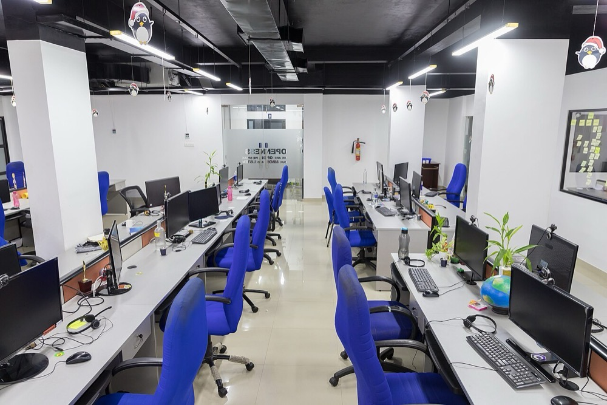
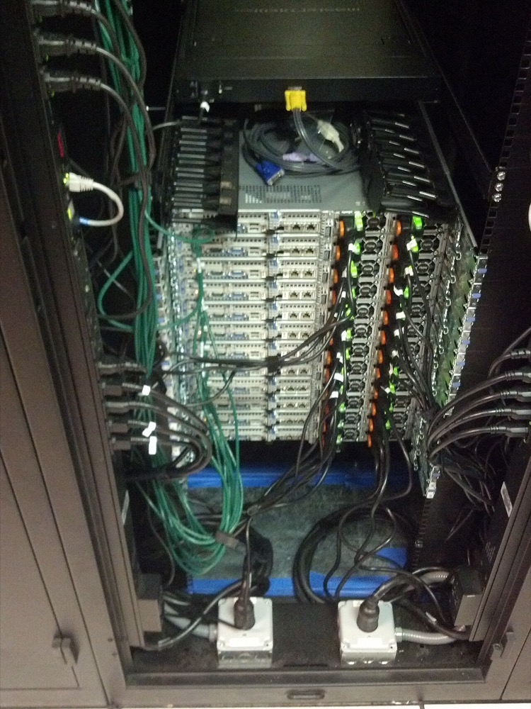

後継者がいない従業員30〜100名規模の受託開発・保守会社を、融資を使って1社ずつ買収する。買収した会社のエンジニアに生成AIを使う開発手順を導入し、1人当たりの売上と利益率を上げる。大企業と中堅企業には、既存システムの保守と更新を複数年の契約で販売する。
情報サービス業の売上高は2024年に17.92兆円である。2015年の10.80兆円から9年で約1.66倍になった。経済産業省の特定サービス産業動態統計の長期データによる1。2015年と2020年に調査対象が追加されており、伸びの一部は対象の追加による1。
内訳では、受注ソフトウェアが11.04兆円、システム等管理運営受託が2.24兆円である1。本案の対象はこの2つの合計13.28兆円のうち、中小の事業者が受注する部分である。
IDC Japanは別の定義で、国内ITサービス市場を2024年に7兆205億円、2029年に9兆6,625億円と予測する。年平均成長率は6.6%である2。
推計 対象市場 ＝ 13.28兆円 × 中小の事業者が受注する比率
中小の事業者の比率を30%と仮定すると、13.28兆円 × 0.3 ≒ 4.0兆円となる。30%は本ページの仮定値で、統計では確認できなかった。
Gartnerは、世界のITサービス支出を2025年に1兆7,157億ドル、2026年に1兆8,702億ドルと予測する。2026年の伸び率は9.0%である3。
| 年 | 変化 | 数値 |
|---|---|---|
| 2018年9月 | 経済産業省がDXレポートで既存システムの更新の遅れを指摘した | 2025年以降に最大で年12兆円の経済損失が生じうるとした4 |
| 2019年4月 | IT人材の需給の試算 | 2030年に最大約79万人が不足すると試算した5 |
| 2024年度 | ソフトウェア業の倒産 | 220件6 |
| 2025年 | 後継者不在率 | 全産業62.60%に対し、情報通信業は77.06%7 |
| 2025年度 2月末まで | ソフトウェア業の倒産 | 195件で過去10年の最多の水準。負債1億円未満が84.6%を占める6 |
| 2026年1月 | 情報サービス業で正社員が不足していると答えた企業 | 69.2%6 |
システムの更新需要は続く一方で、小規模な開発会社は採用ができず人件費が上がっている。情報通信業の後継者不在率は全産業より14ポイント以上高い7。倒産の大半は負債1億円未満の小規模事業者であり6、廃業や倒産の前に譲渡先が求められる。生成AIで開発の工数が減ると、人月単価の契約で売上を立てる会社は売上が減る。工数の削減を利益率の向上に転換できる買い手が、2026年から2030年に有利になる。

| 種類 | 事業者 | 動き |
|---|---|---|
| 上場企業による連続買収 | SHIFT | 2022年3月に買収と統合を行う子会社を設立した。2025年8月期の連結売上高は1,298億円、営業利益率は12.0%である8。2026年1月に業務パッケージと保守運用の会社を約205億円で取得する契約を締結した9 |
| 大手SIer、メーカー系 | 上場の大手各社 | 国内の受託開発の上位を占める。各社の国内受託開発の売上は本ページでは確認していない |
| 投資ファンド | 国内の中小向けファンド | IT企業の事業承継案件の取得例はある。件数は確認できなかった |
SHIFTは2019年12月から2021年7月に8社を子会社にした。2023年6月には3社を同時に取得している8。取得価額は1社10〜20億円の案件が多い8。のれんの残高は2024年8月期に92.6億円で、2024年と2025年の8月期には減損損失を計上した8。
首位の条件 情報サービス業17.92兆円の中で売上高1位になるには兆円単位の売上が必要で、10年では届かない。中小向けの連続買収の分野でも、SHIFTが既に年1,298億円の売上をもつ8。本案が首位を狙えるのは、特定の業種の基幹システムの保守のように範囲を限った分野である。条件は3つである。①同じ業種のシステムを保守する会社を集中して買収し、技術者を相互に配置できること。②買収後1年以内に生成AIを使う開発と保守の手順を統一し、1人当たりの売上を上げること。③人月単価ではなく、保守範囲と年額を定めた契約に切り替えること。

創業者が自ら買収対象を検索し、買収後は社長として経営する。投資家の資金は入れず、自己資金と融資で1社目を買収する。
| 用途 | 金額 | 検証すること |
|---|---|---|
| 検索期間の生活費と活動費 6か月 | 500万円 | 地銀と税理士からの紹介で、条件に合う案件を何件得られるか |
| 財務・労務・技術の買収前の調査、仲介手数料 | 800万円 | 未払残業代、偽装請負の有無、上位顧客への依存度 |
| 1社目の株式取得の自己資金 | 2,400万円 | 営業利益3,000万円の会社を約1.65億円で取得できるか |
| 生成AIの開発環境と教育 | 300万円 | 1人当たりの月間処理量の改善幅 |
| 合計 | 4,000万円 |
| 月 | 計画 |
|---|---|
| 1〜3月目 | 対象を売上高2〜5億円・従業員30〜100名・後継者不在・上位1社への依存が売上の40%以下の会社に絞る。30社を集める |
| 4〜6月目 | 3社と面談し1社と基本合意する。保守契約の残存期間と主要技術者の在籍意向を確認する |
| 7月目 | 株式を取得する。資金は自己資金2,400万円、日本政策金融公庫の事業承継向け融資7,200万円10、地銀の融資約5,000万円、売主への分割払い約1,900万円とする |
| 8〜12月目 | 旧経営者を顧問として残し、顧客と技術者の離反を防ぐ。生成AIを使う開発手順を1チームで試行する。創業者が大企業と中堅企業に保守と更新を営業し、新規の年額契約を2件獲得する |
1年目の判定基準は、主要技術者の離職がなく、1人当たりの売上が買収前から10%以上上がることである。
| 段階 | 資金 | 金融機関 | 条件 |
|---|---|---|---|
| 1社目 1年目 | 事業承継融資、買収融資、売主の分割払い | 日本政策金融公庫 国民生活事業、地銀 | 公庫の限度は別枠7,200万円10。担保となる設備が少ないため、地銀の融資額は運送業や製造業より小さい |
| 2〜5社目 2〜4年目 | 持株会社による買収融資、資本性劣後ローン | 地銀、商工中金、日本政策金融公庫 中小企業事業 | 資本性ローンの限度は15億円、期限一括返済で最長20年11 |
| 6社目以降 5年目以降 | シンジケートローン | メガバンク、地銀の協調融資 | 連結EBITDAの3倍を上限に借りる。保守契約の残高を返済原資の根拠として示す |
受託開発会社の資産は技術者と顧客契約で、担保になる不動産や設備が少ない。借入の倍率は運送会社の買収より低く置く。
| 年目 | 1 | 2 | 3 | 5 | 7 | 10 |
|---|---|---|---|---|---|---|
| グループ会社数 | 1 | 3 | 7 | 20 | 45 | 90 |
| 売上高 億円 | 3 | 10 | 25 | 110 | 330 | 1,000 |
| 営業利益 億円 | 0.24 | 0.9 | 2.5 | 12 | 36 | 110 |
| 累計投資 億円 | 1.65 | 5.5 | 14 | 60 | 180 | 550 |
| 借入残高 億円 | 1.3 | 4.5 | 11 | 45 | 130 | 380 |
| 年目 | 1 | 2 | 3 | 5 | 7 | 10 |
|---|---|---|---|---|---|---|
| グループ会社数 | 1 | 2 | 3 | 7 | 12 | 22 |
| 売上高 億円 | 3 | 5 | 8 | 22 | 42 | 80 |
| 営業利益 億円 | 0.2 | 0.35 | 0.6 | 1.8 | 3.6 | 7 |
| 累計投資 億円 | 1.65 | 2.8 | 4.5 | 12 | 23 | 44 |
| 借入残高 億円 | 1.3 | 2.2 | 3.5 | 9 | 17 | 30 |
前提
楽観の10年目は売上高1,000億円で目安に届く。ただし10年で90社の買収と統合を要し、年平均9社である。保守では22社、売上高80億円に留まる。
楽観の売上高1,000億円は、情報サービス業17.92兆円の約0.56%である1。第2章の推計4.0兆円に対しても2.5%である。SHIFTの2025年8月期の売上高1,298億円にも届かない8。国内の情報サービス業でシェア1位には10年で届かない。
首位を取りうるのは、特定の業種の基幹システムの保守である。たとえば地方の医療機関、健康保険組合、中堅製造業などである。各分野の市場規模と上位事業者の売上は確認できず、1,000億円以上の条件を満たす分野があるかは判定できない。
停止する位置は3つある。1つ目は1社目の統合で主要技術者が離職し、保守契約が解約される場合である。2つ目は生成AIで顧客が開発を内製し、受託の需要そのものが減る場合である。3つ目は5年目前後で、SHIFTや投資ファンドとの取得競争により取得価格が上がる場合である。
国内の顧客に日本語で提供する事業であり、海外の顧客への販売は想定しない。海外は開発の拠点として使う。
| 順 | 国 | 理由 |
|---|---|---|
| 1 | ベトナム | 日本向けのオフショア開発会社が多く、買収または提携で開発要員を確保できる |
| 2 | フィリピン、インド | 英語圏の開発要員を確保し、日系企業の海外拠点のシステム保守を受託する |
グローバルなインフラになる見込みは低い。
| # | 基準 | 判定 | 根拠 |
|---|---|---|---|
| 1 | 50年、魂を燃やし続けられるか | 創業者が判定 | |
| 2 | 10年以内に、国内市場規模1,000億円以上の市場でシェア1位になれるか | × | 楽観の10年目1,000億円でも情報サービス業の0.56%で、連続買収の先行者SHIFTの現在の売上1,298億円にも届かない |
| 3 | 4,000万円で始められ、融資で伸ばせるか | ○ | 公庫の承継融資7,200万円と地銀融資で約1.65億円の1社目を取得できる。担保が少なく借入の倍率は低い |
| 4 | グローバルなインフラになり得るか | × | 日本語で国内顧客に提供する事業で、海外は開発拠点に限られる |
| 5 | 営業力が最初の売上に直接結びつくか | ◎ | 買収した会社の技術者を使い、大企業への保守と更新の提案をそのまま受注に結びつけられる |
| 6 | 同じビジョンを共有する仲間を誘える事業か | 創業者が判定 | |
| 7 | 本業が早く現金を生み、返済と出資の原資になるか | ○ | 買収した時点で保守契約の現金収入がある。利益率は8〜11%で、初期の大半は返済に充てられる |
| 8 | 投資先を束ねる群の中核になれるか | ○ | 技術者が出資先の技術を評価でき、保守顧客が出資先のSaaSの販売先になる |
| 9 | 成長の資金源がA・B・Cのどれに当たるか | C | 買収対象のキャッシュフローを返済原資にした借入で買収する |
1. 生成AIによる受託需要の減少 生成AIで顧客が開発を内製すると、受託の工数そのものが減る。人月単価の契約は売上が工数に比例するため、工数の削減がそのまま減収になる。対策は保守範囲と年額を定めた契約に切り替え、工数の削減を利益に変えることである。顧客が保守まで内製する場合は潰せない。
2. 主要技術者の離職 会社の価値は技術者と顧客の関係にある。買収後に技術者が辞めると、保守契約も解約される。対策は買収前に主要技術者と面談し、在籍の条件を株式の取得契約に含めることである。技術者の転職市場の賃金上昇は潰せない。
3. 多重下請けと契約形態の問題 小規模な開発会社には、請負の契約で実際は客先で指揮を受ける例がある。偽装請負と判断されると是正と取引停止が起きる。対策は買収前の調査で契約と就業実態を照合し、該当する取引を取得価格から除くことである。
4. 取得価格の上昇 SHIFTは2026年1月に約205億円の取得を決めた9。上場企業と投資ファンドが買い手として増えると、小規模な会社の価格も上がる。対策は地銀と税理士の紹介による相対の案件に絞ることである。価格競争そのものは潰せない。
5. のれんの減損 SHIFTも2024年と2025年の8月期に減損損失を計上した8。買収した会社の利益が下がると、のれんの減損で純資産が減り、追加の融資が得られない。対策は1社ずつ統合を終えてから次を買うことである。